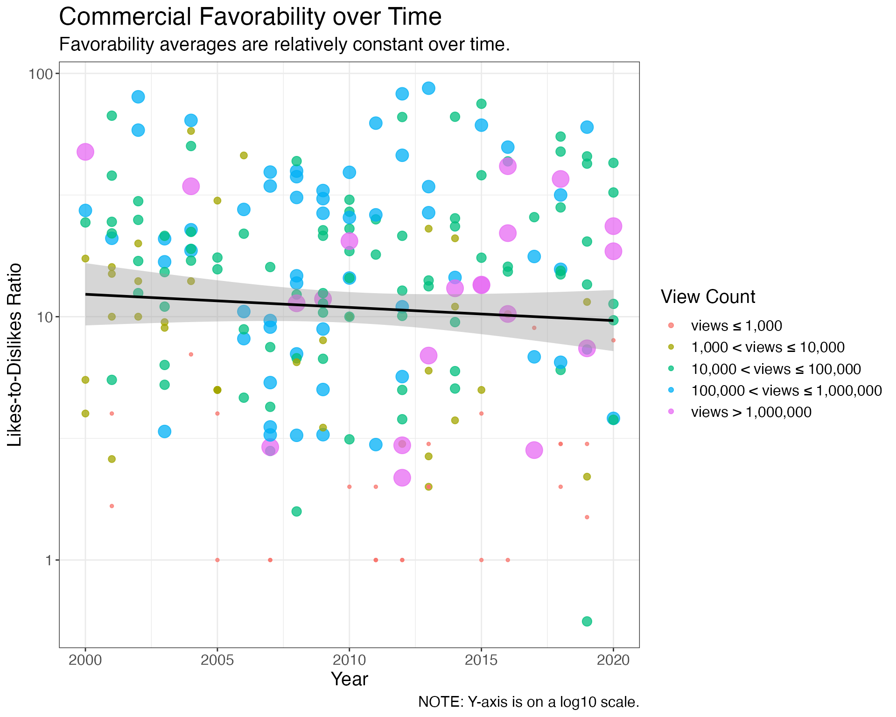

Example Analysis
Example_analysis.RmdAims
In this analysis, I seek to demonstrate the use of the
leaps package, and answer the following questions about
superbowl commercials:
What are the most common superbowl commercial attributes, and how do they vary in usage over time and within brands?
Which commercial attributes are associated with higher favorability?
To what extent does Superbowl commercial favorability vary over time and between brands?
Using multiple linear regression, can we identify significant predictors of commercial favorability?
Note that I will be using the commercial’s like-to-dislike ratio from youtube to quantify its favorability.
Load Data
The data for this analysis are from Five-Thirty-Eight by-way-of TidyTuesday. The TidyTuesday link provides access to the TidyTuesday github repository as well as the data dictionary used for this analysis. Briefly, the data provides information on 247 Superbowl commercials between the years 2000 and 2020. Each commercial is evaluated on the presence or absence of 7 different attributes, and the youtube view counts, like counts, and dislike counts are provided.
if (!file.exists(here("data","youtube.csv"))) {
dir.create(here("data"))
tuesdata <- tidytuesdayR::tt_load(2021, week = 10)
youtube.raw <- tuesdata$youtube
write.csv(youtube.raw, here("data","youtube.csv"))
} else{
youtube.raw <- read.csv(here("data","youtube.csv"))
}
glimpse(youtube.raw)
#> Rows: 247
#> Columns: 26
#> $ X <int> 1, 2, 3, 4, 5, 6, 7, 8, 9, 10, 11, 12, 13, 1…
#> $ year <int> 2018, 2020, 2006, 2018, 2003, 2020, 2020, 20…
#> $ brand <chr> "Toyota", "Bud Light", "Bud Light", "Hynudai…
#> $ superbowl_ads_dot_com_url <chr> "https://superbowl-ads.com/good-odds-toyota/…
#> $ youtube_url <chr> "https://www.youtube.com/watch?v=zeBZvwYQ-hA…
#> $ funny <lgl> FALSE, TRUE, TRUE, FALSE, TRUE, TRUE, TRUE, …
#> $ show_product_quickly <lgl> FALSE, TRUE, FALSE, TRUE, TRUE, TRUE, FALSE,…
#> $ patriotic <lgl> FALSE, FALSE, FALSE, FALSE, FALSE, FALSE, FA…
#> $ celebrity <lgl> FALSE, TRUE, FALSE, FALSE, FALSE, TRUE, TRUE…
#> $ danger <lgl> FALSE, TRUE, TRUE, FALSE, TRUE, TRUE, FALSE,…
#> $ animals <lgl> FALSE, FALSE, TRUE, FALSE, TRUE, TRUE, TRUE,…
#> $ use_sex <lgl> FALSE, FALSE, FALSE, FALSE, TRUE, FALSE, FAL…
#> $ id <chr> "zeBZvwYQ-hA", "nbbp0VW7z8w", "yk0MQD5YgV8",…
#> $ kind <chr> "youtube#video", "youtube#video", "youtube#v…
#> $ etag <chr> "rn-ggKNly38Cl0C3CNjNnUH9xUw", "1roDoK-SYqSp…
#> $ view_count <int> 173929, 47752, 142310, 198, 13741, 23636, 30…
#> $ like_count <int> 1233, 485, 129, 2, 20, 115, 1470, 78, 342, 7…
#> $ dislike_count <int> 38, 14, 15, 0, 3, 11, 384, 6, 7, 0, 14, 0, 2…
#> $ favorite_count <int> 0, 0, 0, 0, 0, 0, 0, 0, 0, 0, 0, 0, 0, 0, 0,…
#> $ comment_count <int> NA, 14, 9, 0, 2, 13, 227, 6, 30, 0, 8, 1, 13…
#> $ published_at <chr> "2018-02-03 11:29:14", "2020-01-31 21:04:13"…
#> $ title <chr> "Toyota Super Bowl Commercial 2018 Good Odds…
#> $ description <chr> "Toyota Super Bowl Commercial 2018 Good Odds…
#> $ thumbnail <chr> "https://i.ytimg.com/vi/zeBZvwYQ-hA/sddefaul…
#> $ channel_title <chr> "Funny Commercials", "VCU Brandcenter", "Joh…
#> $ category_id <int> 1, 27, 17, 22, 24, 1, 24, 2, 24, 24, 24, 24,…Wrangle data
Here, I create 3 different data frames:
-
youtube.mod: same as theyoutube.rawdata frame, but includes the mutated columnslike_to_dislike,view_group,view_factor,view_count_log10, andlike_to_dislike_log10. I briefly summarize these variables below:like-to-dislike: The likes-to-dislikes ratio for a given commercial. Note that I added the+1in the numerator and denominator to correct for instances where the commercial has either 0 likes or dislikes. This is required for thelog10transformation.view_group: used for defining point size based on number of views inggplot.view_factor: assigns a bin label to each commercial based on itsview_count.view_count_log10: Alog10transformation ofview_count.like_to_dislike_log10: Alog10transformation oflike-to-dislike.
youtube.attr_by_year: summarizes commercial attributes and favorability by yearyoutube.attr_by_brand: summarizes commercial attributes and favorability by brand
size_factor <- 1/2
youtube.mod <- youtube.raw %>%
mutate(like_to_dislike = (like_count + 1) / (dislike_count + 1),
view_group = case_when(view_count > 10 ** 6 ~ (size_factor)**0,
view_count > 10 ** 5 & view_count <= 10 ** 6 ~ (size_factor)**1,
view_count > 10 ** 4 & view_count <= 10 ** 5 ~ (size_factor)**2,
view_count > 10 ** 3 & view_count <= 10 ** 4 ~ (size_factor)**3,
view_count > 0 & view_count <= 10 ** 3 ~ (size_factor)**4)) %>%
mutate(view_factor = factor(view_group),
view_count_log10 = log10(view_count),
like_to_dislike_log10 = log10(like_to_dislike))
levels(youtube.mod$view_factor) <- c("views \u2264 1,000",
"1,000 < views \u2264 10,000",
"10,000 < views \u2264 100,000",
"100,000 < views \u2264 1,000,000",
"views > 1,000,000")
glimpse(youtube.mod)
#> Rows: 247
#> Columns: 31
#> $ X <int> 1, 2, 3, 4, 5, 6, 7, 8, 9, 10, 11, 12, 13, 1…
#> $ year <int> 2018, 2020, 2006, 2018, 2003, 2020, 2020, 20…
#> $ brand <chr> "Toyota", "Bud Light", "Bud Light", "Hynudai…
#> $ superbowl_ads_dot_com_url <chr> "https://superbowl-ads.com/good-odds-toyota/…
#> $ youtube_url <chr> "https://www.youtube.com/watch?v=zeBZvwYQ-hA…
#> $ funny <lgl> FALSE, TRUE, TRUE, FALSE, TRUE, TRUE, TRUE, …
#> $ show_product_quickly <lgl> FALSE, TRUE, FALSE, TRUE, TRUE, TRUE, FALSE,…
#> $ patriotic <lgl> FALSE, FALSE, FALSE, FALSE, FALSE, FALSE, FA…
#> $ celebrity <lgl> FALSE, TRUE, FALSE, FALSE, FALSE, TRUE, TRUE…
#> $ danger <lgl> FALSE, TRUE, TRUE, FALSE, TRUE, TRUE, FALSE,…
#> $ animals <lgl> FALSE, FALSE, TRUE, FALSE, TRUE, TRUE, TRUE,…
#> $ use_sex <lgl> FALSE, FALSE, FALSE, FALSE, TRUE, FALSE, FAL…
#> $ id <chr> "zeBZvwYQ-hA", "nbbp0VW7z8w", "yk0MQD5YgV8",…
#> $ kind <chr> "youtube#video", "youtube#video", "youtube#v…
#> $ etag <chr> "rn-ggKNly38Cl0C3CNjNnUH9xUw", "1roDoK-SYqSp…
#> $ view_count <int> 173929, 47752, 142310, 198, 13741, 23636, 30…
#> $ like_count <int> 1233, 485, 129, 2, 20, 115, 1470, 78, 342, 7…
#> $ dislike_count <int> 38, 14, 15, 0, 3, 11, 384, 6, 7, 0, 14, 0, 2…
#> $ favorite_count <int> 0, 0, 0, 0, 0, 0, 0, 0, 0, 0, 0, 0, 0, 0, 0,…
#> $ comment_count <int> NA, 14, 9, 0, 2, 13, 227, 6, 30, 0, 8, 1, 13…
#> $ published_at <chr> "2018-02-03 11:29:14", "2020-01-31 21:04:13"…
#> $ title <chr> "Toyota Super Bowl Commercial 2018 Good Odds…
#> $ description <chr> "Toyota Super Bowl Commercial 2018 Good Odds…
#> $ thumbnail <chr> "https://i.ytimg.com/vi/zeBZvwYQ-hA/sddefaul…
#> $ channel_title <chr> "Funny Commercials", "VCU Brandcenter", "Joh…
#> $ category_id <int> 1, 27, 17, 22, 24, 1, 24, 2, 24, 24, 24, 24,…
#> $ like_to_dislike <dbl> 31.641026, 32.400000, 8.125000, 3.000000, 5.…
#> $ view_group <dbl> 0.5000, 0.2500, 0.5000, 0.0625, 0.2500, 0.25…
#> $ view_factor <fct> "100,000 < views ≤ 1,000,000", "10,000 < vie…
#> $ view_count_log10 <dbl> 5.240372, 4.678992, 5.153235, 2.296665, 4.13…
#> $ like_to_dislike_log10 <dbl> 1.5002506, 1.5105450, 0.9098234, 0.4771213, …
youtube.attr_by_year <- split(youtube.mod, youtube.mod$year) %>%
map(function(x) summarize(x, n = n(),
funny = mean(funny),
celebrity = mean(celebrity),
use_sex = mean(use_sex),
spq = mean(show_product_quickly),
patriotic = mean(patriotic),
danger = mean(danger),
animals = mean(animals),
lltd = mean(like_to_dislike, na.rm = TRUE))) %>%
map_df(.f = ~.x, .id = "year") %>%
pivot_longer(cols = funny:animals, names_to = "attribute", values_to = "relative_prop")
glimpse(youtube.attr_by_year)
#> Rows: 147
#> Columns: 5
#> $ year <chr> "2000", "2000", "2000", "2000", "2000", "2000", "2000", …
#> $ n <int> 8, 8, 8, 8, 8, 8, 8, 13, 13, 13, 13, 13, 13, 13, 10, 10,…
#> $ lltd <dbl> 21.02580, 21.02580, 21.02580, 21.02580, 21.02580, 21.025…
#> $ attribute <chr> "funny", "celebrity", "use_sex", "spq", "patriotic", "da…
#> $ relative_prop <dbl> 1.00000000, 0.00000000, 0.12500000, 0.62500000, 0.000000…
youtube.attr_by_brand <- split(youtube.mod, youtube.mod$brand) %>%
map(function(x) summarize(x, n = n(),
funny = mean(funny),
celebrity = mean(celebrity),
use_sex = mean(use_sex),
spq = mean(show_product_quickly),
patriotic = mean(patriotic),
danger = mean(danger),
animals = mean(animals),
lltd = mean(like_to_dislike, na.rm = TRUE))) %>%
map_df(.f = ~.x, .id = "brand") %>%
pivot_longer(cols = funny:animals, names_to = "attribute", values_to = "relative_prop")
glimpse(youtube.attr_by_brand)
#> Rows: 70
#> Columns: 5
#> $ brand <chr> "Bud Light", "Bud Light", "Bud Light", "Bud Light", "Bud…
#> $ n <int> 63, 63, 63, 63, 63, 63, 63, 43, 43, 43, 43, 43, 43, 43, …
#> $ lltd <dbl> 13.88535, 13.88535, 13.88535, 13.88535, 13.88535, 13.885…
#> $ attribute <chr> "funny", "celebrity", "use_sex", "spq", "patriotic", "da…
#> $ relative_prop <dbl> 0.95238095, 0.26984127, 0.42857143, 0.82539683, 0.047619…Analysis
How common are superbowl commercial attributes over time and within brands?
youtube.attr_by_year %>%
ggplot(aes(x = year, y = relative_prop, color = attribute, group = 1)) +
geom_line() +
facet_wrap(~attribute) +
labs(title = "Trends in Commercial Attribute Use over Time",
subtitle = "The use of 'funny' and 'sex' is decreasing over time, while 'celebrity' and 'patriotic' is rising.",
x = "Year",
y = "Relative Proportion",
caption = "Units on the x-axis are discrete. Line plots were used for the ease of viewing.") +
scale_x_discrete(breaks=seq(2000,2020,5)) +
theme_bw() +
theme(legend.position = "none",
text = element_text(size = 15),
plot.title = element_text(size = 20),
axis.text.x = element_text(size = 12),
axis.text.y = element_text(size = 12))
youtube.attr_by_brand %>%
ggplot(aes(x = attribute, y = brand, fill = relative_prop)) +
geom_tile() +
scale_fill_gradient(low = "white", high = "red") +
geom_text(aes(label=round(relative_prop,2)), colour = "black", check_overlap = TRUE) +
labs(title = "Proportion of Brand's Commericials exhibiting Attribute",
subtitle = "'Funny' and 'Shows product quickly' are among the most common attributes.",
x = "Commercial Attribute",
y = "Brand",
fill = "Relative Proportion",
caption = "Colors represent the proportion of a brand's commercials containing an attribute.") +
theme_bw() +
theme(text = element_text(size = 15),
plot.title = element_text(size = 20),
axis.text.x = element_text(size = 12),
axis.text.y = element_text(size = 12))Which commercial attributes are associated with higher favorability?
youtube.mod %>%
select(funny, show_product_quickly, patriotic, animals, danger,
celebrity, use_sex, like_to_dislike) %>%
pivot_longer(cols = funny:use_sex,
names_to = "attribute",
values_to = "value") %>%
ggplot(aes(x = value, y = like_to_dislike, fill = attribute)) +
geom_boxplot(outlier.shape = NA) +
geom_jitter(width = 0.15, alpha = 0.25, size = 1) +
stat_summary(fun = "mean", color = "white", shape = 3) +
scale_y_continuous(trans = 'log10') +
facet_wrap(~attribute) +
labs(title = "Commercial Favorability by Attribute",
subtitle = "'Celebrity' and 'Danger' are associated with greater mean commericial favorability.",
caption = "NOTE: Y-axis is on a log10 scale.",
x = "Level",
y = "Likes-to-Dislikes Ratio") +
theme_bw() +
theme(legend.position = 'none',
text = element_text(size = 15),
plot.title = element_text(size = 20),
axis.text.x = element_text(size = 12),
axis.text.y = element_text(size = 12))To what extent does superbowl commercial favorability vary over time and between brands?
youtube.mod %>%
#filter(view_count > 1000) %>%
group_by(year) %>%
mutate(lmean = 10**mean(log10(like_to_dislike), na.rm = TRUE)) %>%
ggplot(aes(x = year, y = like_to_dislike)) +
geom_point(aes(size = view_group, color = view_factor), alpha = 0.75) +
geom_smooth(method = "lm", color = "black") +
scale_y_continuous(trans = 'log10') +
scale_size(guide = "none") +
scale_colour_discrete(na.translate = F) +
labs(title = "Commercial Favorability over Time",
subtitle = "Favorability averages are relatively constant over time.",
x = "Year",
y = "Likes-to-Dislikes Ratio",
caption = "NOTE: Y-axis is on a log10 scale.",
color = "View Count") +
theme_bw() +
theme(text = element_text(size = 15),
plot.title = element_text(size = 20),
axis.text.x = element_text(size = 12),
axis.text.y = element_text(size = 12))
youtube.mod %>%
filter(!is.na(like_count)) %>%
ggplot(aes(x = fct_reorder(brand, like_to_dislike, .fun = median),
y = like_to_dislike)) +
geom_boxplot(outlier.shape = NA) +
geom_point(aes(size = view_group, color = view_factor), alpha = 0.75,
position=position_jitter(width=0.15)) +
scale_y_continuous(trans = 'log10') +
scale_size(guide = "none") +
labs(title = "Commercial Favorability and Viewership by Brand",
subtitle = "Kia commericals had the highest average likes-to-dislikes ratio. \n Doritos had the most commericals with > 1 million views.",
x = "Brand",
y = "Likes-to-Dislikes Ratio",
color = "View Count",
caption = "NOTE: Y-axis is on a log10 scale.") +
theme_bw() +
theme(axis.text.x = element_text(size = 12, angle = -35),
text = element_text(size = 15),
plot.title = element_text(size = 20),
axis.text.y = element_text(size = 12))
Is total view count associated commercial favorability?
youtube.mod %>%
#filter(view_count > 1000) %>%
ggplot(aes(x = view_count, y = like_to_dislike)) +
geom_point(shape = 1) +
geom_smooth(method = "lm", color = "black") +
stat_poly_eq() +
scale_y_continuous(trans = 'log10') +
scale_x_continuous(trans = 'log10') +
labs(title = "Commerical Favorability as a Function of View Count",
subtitle = "On average, higher viewiership is associated with greater favorability.",
caption = "NOTE: Y-axis is on a log10 scale.",
x = "View Count",
y = "Likes-to-Dislikes Ratio") +
theme_bw() +
theme(text = element_text(size = 15),
plot.title = element_text(size = 20),
axis.text.x = element_text(size = 12),
axis.text.y = element_text(size = 12))
Leaps Demonstration
Now we want to use multiple linear regression to model commercial
favorability. Below is the data matrix we will use for our model
fitting. It includes 9 predictor variables and 1 response variable
(i.e., like_to_dislike_log10). We don’t necessarily want to
use all of these variable in our model, since this could lead to over
fitting. Therefore, we need to decide on a subset of these variables
that will maximize the fit of the model while preventing over fitting.
This is where leaps comes in.
################################################################################
# Clean data frame before running model selection algo
################################################################################
youtube.subset <- youtube.mod %>%
#filter(view_count > 1000) %>%
select(year, funny, show_product_quickly, patriotic, animals, danger,
celebrity, use_sex, view_count_log10, like_to_dislike_log10) %>%
filter(!is.na(view_count_log10) & !is.na(like_to_dislike_log10))
glimpse(youtube.subset)
#> Rows: 225
#> Columns: 10
#> $ year <int> 2018, 2020, 2006, 2018, 2003, 2020, 2020, 2020, …
#> $ funny <lgl> FALSE, TRUE, TRUE, FALSE, TRUE, TRUE, TRUE, FALS…
#> $ show_product_quickly <lgl> FALSE, TRUE, FALSE, TRUE, TRUE, TRUE, FALSE, FAL…
#> $ patriotic <lgl> FALSE, FALSE, FALSE, FALSE, FALSE, FALSE, FALSE,…
#> $ animals <lgl> FALSE, FALSE, TRUE, FALSE, TRUE, TRUE, TRUE, FAL…
#> $ danger <lgl> FALSE, TRUE, TRUE, FALSE, TRUE, TRUE, FALSE, FAL…
#> $ celebrity <lgl> FALSE, TRUE, FALSE, FALSE, FALSE, TRUE, TRUE, TR…
#> $ use_sex <lgl> FALSE, FALSE, FALSE, FALSE, TRUE, FALSE, FALSE, …
#> $ view_count_log10 <dbl> 5.240372, 4.678992, 5.153235, 2.296665, 4.138018…
#> $ like_to_dislike_log10 <dbl> 1.5002506, 1.5105450, 0.9098234, 0.4771213, 0.72…Below, I use leaps::regsubsets to apply model subset
selection using an exhaustive search algorithm. Given a data matrix with
a specified response variable, this function will fit a multiple linear
model for every possible combination of predictors and returns the
best-fitting model for each model size. For instance, if you provide 3
distinct predictor variables and a response variable, then
leaps::regsubsets will return 3 separate models: the
best-fitting model using one variable, the best-fitting model using two
variables, and the full model.
################################################################################
# Create a regsubsets object and perform model selection with EXHAUSTIVE search
################################################################################
mod.subsets <- leaps::regsubsets(like_to_dislike_log10 ~.,
data = youtube.subset,
force.in = NULL, force.out = NULL,
method = "exhaustive")
################################################################################
# Plot summary of output from regsubsets
################################################################################
mod.subsets.summary <- summary(mod.subsets)
par(mfrow = c(2,2))
plot(mod.subsets.summary$rss, xlab = "Number of Variables", ylab = "RSS", type = 'l')
plot(mod.subsets.summary$bic, xlab = "Number of Variables", ylab = "BIC", type = 'l')
points(3,mod.subsets.summary$bic[3],col="red",cex=2,pch=20)
plot(mod.subsets.summary$adjr2, xlab = "Number of Variables", ylab = "Adjusted RSq", type = 'l')
points(6,mod.subsets.summary$adjr2[6],col="red",cex=2,pch=20)
plot(mod.subsets.summary$cp, xlab = "Number of Variables", ylab = "Cp", type = 'l')
points(4,mod.subsets.summary$cp[4],col="red",cex=2,pch=20)The plots above were outputted by
leaps::summary.regsubsets; they summarize the results from
leaps::regsubsets using 4 different goodness of fit
metrics: residual sum of squares (RSS), Bayesian Information Criterion
(BIC), adjusted R-squared, and Mallow’s Cp. If we use adjusted
R-squared as our goodness of fit metric, then the lower left
subplot tells us that the overall best-fitting model has six predictor
variables. To see which variables these are, we will run the
leaps::plot.regsubsets function.
par(mfrow = c(2,2))
plot(mod.subsets, scale = "bic")
plot(mod.subsets, scale = "r2")
plot(mod.subsets, scale = "adjr2")
plot(mod.subsets, scale = "Cp")As we can see above, leaps::plot.regsubsets returned
graphical depiction of the best fitting-models for each number of
predictor variables and goodness-of-fit metric. Since we are using
adjusted R-squared, we want to select the model that maximizes this
value. The top row on the lower left subplot tells us that the following
model maximizes adjusted R-squared:
like_to_dislike_log10 ~ 1 + year + patriotic + animals + danger + celebrity + view_count_log10.
Note that this model has 6 predictor variables, which is consistent with
the output from leaps::summary.regsubsets.
Now we will fit the model that maximizes adjusted R-squared using the
lm function.
################################################################################
# Build best fitting model and then summarize
################################################################################
mod <- lm(like_to_dislike_log10 ~ 1 + year + view_count_log10 + factor(patriotic) + factor(animals) + factor(danger) + factor(celebrity), data = youtube.subset)
anova(mod)
#> Analysis of Variance Table
#>
#> Response: like_to_dislike_log10
#> Df Sum Sq Mean Sq F value Pr(>F)
#> year 1 0.217 0.2167 1.3252 0.2509
#> view_count_log10 1 11.875 11.8748 72.6086 2.623e-15 ***
#> factor(patriotic) 1 0.416 0.4158 2.5427 0.1123
#> factor(animals) 1 0.136 0.1358 0.8301 0.3632
#> factor(danger) 1 0.644 0.6438 3.9367 0.0485 *
#> factor(celebrity) 1 2.815 2.8147 17.2107 4.795e-05 ***
#> Residuals 218 35.653 0.1635
#> ---
#> Signif. codes: 0 '***' 0.001 '**' 0.01 '*' 0.05 '.' 0.1 ' ' 1
summary(mod)
#>
#> Call:
#> lm(formula = like_to_dislike_log10 ~ 1 + year + view_count_log10 +
#> factor(patriotic) + factor(animals) + factor(danger) + factor(celebrity),
#> data = youtube.subset)
#>
#> Residuals:
#> Min 1Q Median 3Q Max
#> -1.28987 -0.29451 0.05051 0.29388 0.90134
#>
#> Coefficients:
#> Estimate Std. Error t value Pr(>|t|)
#> (Intercept) 19.042681 9.847909 1.934 0.0544 .
#> year -0.009441 0.004904 -1.925 0.0555 .
#> view_count_log10 0.186205 0.022667 8.215 1.87e-14 ***
#> factor(patriotic)TRUE -0.086801 0.077537 -1.119 0.2642
#> factor(animals)TRUE 0.072989 0.057323 1.273 0.2043
#> factor(danger)TRUE 0.136440 0.060248 2.265 0.0245 *
#> factor(celebrity)TRUE 0.255151 0.061503 4.149 4.80e-05 ***
#> ---
#> Signif. codes: 0 '***' 0.001 '**' 0.01 '*' 0.05 '.' 0.1 ' ' 1
#>
#> Residual standard error: 0.4044 on 218 degrees of freedom
#> Multiple R-squared: 0.3111, Adjusted R-squared: 0.2922
#> F-statistic: 16.41 on 6 and 218 DF, p-value: 1.402e-15
par(mfrow = c(2,2))
plot(mod)After running a one-way ANOVA on the model, we find that the
significant sources of variation in like_to_dislike_log10
come from view_count_log10, celebrity, and
danger.
According to the model summary, the model estimates that, on average:
a 10-fold increase in view count is associated with an approximately 50% increase in like-to-dislike ratio.
the use of danger in a commercial is associated with an approximately 37% increase in like-to-dislike ratio.
the use of celebrities in a commercial is associated with an approximately 80% increase in like-to-dislike ratio.
It is important to note that, based on the model diagnostic plots, really large and really small like-to-dislike ratios tend to be overestimated. Therefore, extreme estimates of like-to-dislike ratios should be taken with a grain of salt.
Summary
Overall, this analysis showed that variations in superbowl commercial favorability, as measured by like-to-dislike ratio, can be explained in part by their view count on youtube, the inclusion of “dangerous” themes, and the inclusion of celebrities. It is important to note that this analysis was conducted on a limited sample of superbowl commercials provided by Five-Thirty-Eight, and so the findings from this analysis may not generalize to a larger, more representative sample.